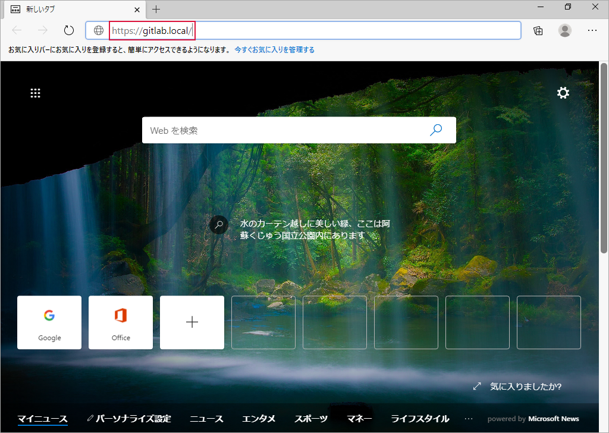
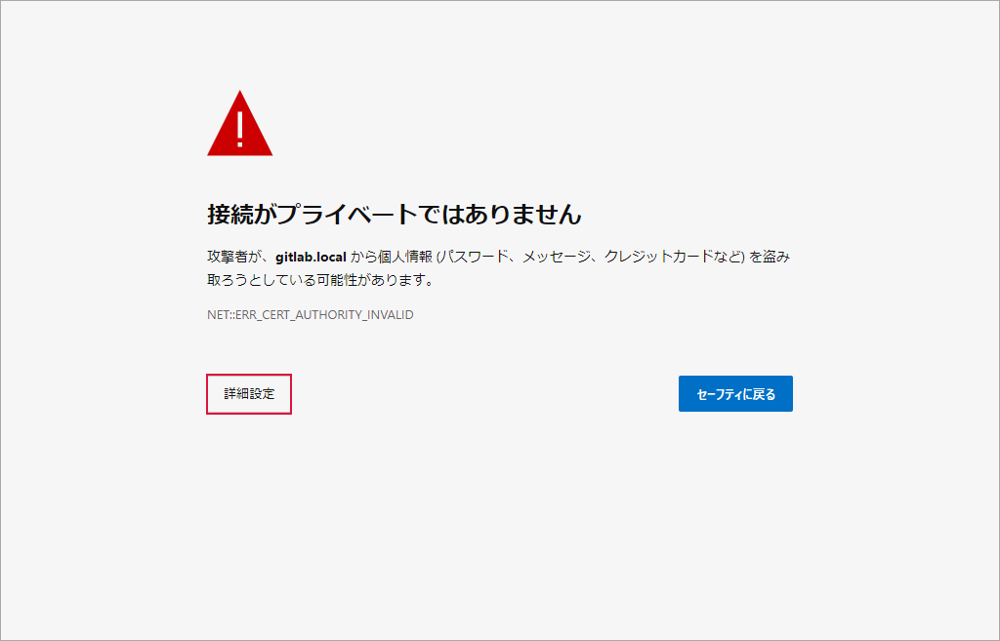
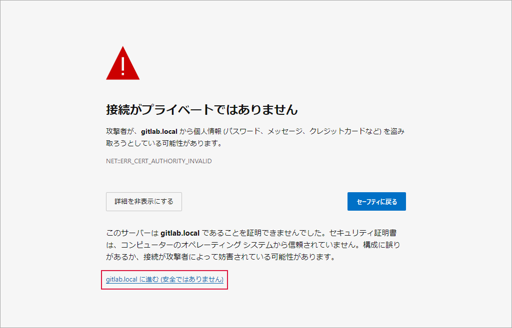
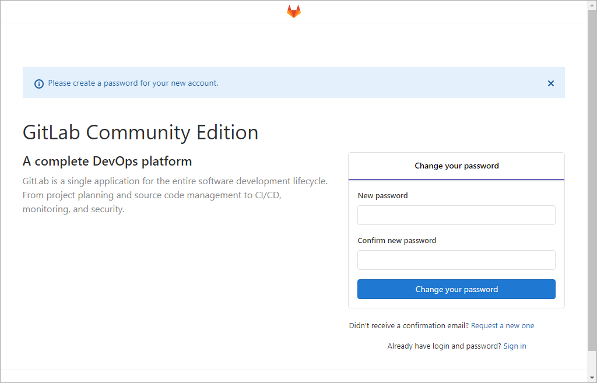
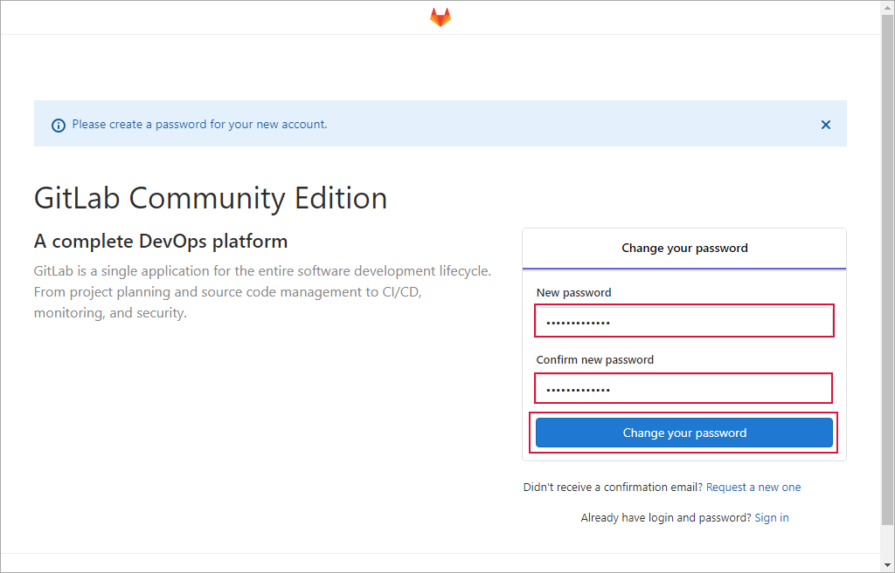
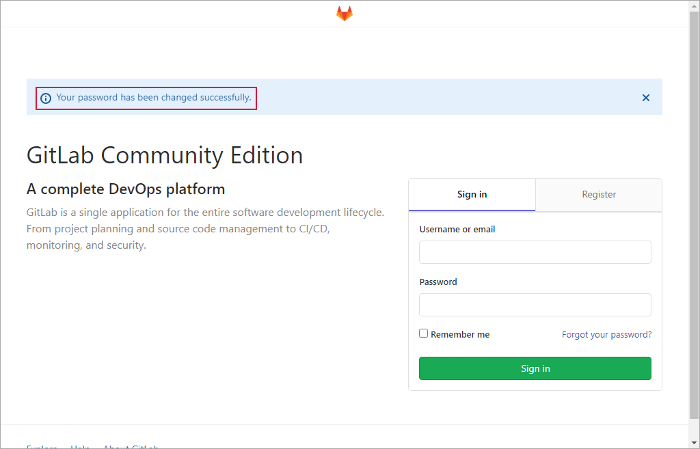

環境構築¶
インストール¶
「 GitLab.JP: GitLab日本語情報サイト 」の「 セルフマネージドGitLabをインストール 」を参考に以下の内容の Vagrantfile を作成しました。これを使用して GitLab CE をインストールします。
$script = <<-'SCRIPT'
timedatectl set-timezone Asia/Tokyo
dnf -y remove open-vm-tools
dnf -y update
dnf install -y curl policycoreutils openssh-server openssh-clients
systemctl enable sshd
systemctl start sshd
firewall-cmd --permanent --add-service=http
firewall-cmd --permanent --add-service=https
systemctl reload firewalld
dnf install postfix
systemctl enable postfix
systemctl start postfix
curl -sS https://packages.gitlab.com/install/repositories/gitlab/gitlab-ce/script.rpm.sh | bash
EXTERNAL_URL="https://gitlab.local" dnf install -y gitlab-ce
SCRIPT
Vagrant.configure("2") do |config|
if Vagrant.has_plugin?("vagrant-vbguest")
config.vbguest.auto_update = false
end
config.vm.define :centos8 do |centos8|
centos8.vm.box = "centos/8"
centos8.vm.network "public_network", mac: "000d58000001", ip: "192.168.1.151"
centos8.vm.hostname = "gitlab.local"
centos8.vm.provider "virtualbox" do |vb|
vb.name = "gitlab"
vb.memory = "16384"
vb.cpus = 4
end
centos8.vm.provision "shell", inline: $script
end
end
GitLab CE のインストール時にいろいろと更新するので、インストール後は仮想マシンを再起動します。
C:\vagrant\gitlab>vagrant reload
==> centos8: Attempting graceful shutdown of VM...
==> centos8: Checking if box 'centos/8' version '1905.1' is up to date...
==> centos8: Clearing any previously set forwarded ports...
==> centos8: Clearing any previously set network interfaces...
==> centos8: Preparing network interfaces based on configuration...
centos8: Adapter 1: nat
centos8: Adapter 2: bridged
==> centos8: Forwarding ports...
centos8: 22 (guest) => 2222 (host) (adapter 1)
==> centos8: Running 'pre-boot' VM customizations...
==> centos8: Booting VM...
==> centos8: Waiting for machine to boot. This may take a few minutes...
centos8: SSH address: 127.0.0.1:2222
centos8: SSH username: vagrant
centos8: SSH auth method: private key
==> centos8: Machine booted and ready!
==> centos8: Checking for guest additions in VM...
centos8: No guest additions were detected on the base box for this VM! Guest
centos8: additions are required for forwarded ports, shared folders, host only
centos8: networking, and more. If SSH fails on this machine, please install
centos8: the guest additions and repackage the box to continue.
centos8:
centos8: This is not an error message; everything may continue to work properly,
centos8: in which case you may ignore this message.
==> centos8: Setting hostname...
==> centos8: Configuring and enabling network interfaces...
==> centos8: Rsyncing folder: /cygdrive/c/vagrant/gitlab/ => /vagrant
==> centos8: Machine already provisioned. Run `vagrant provision` or use the `--provision`
==> centos8: flag to force provisioning. Provisioners marked to run always will still run.
C:\vagrant\gitlab>
名前解決ができるようクライアントパソコンの “C:\Windows\System32\drivers\etc\hosts” ファイルに次の内容を追記します。もしくは内部 DNS サーバーがあり、そちらで名前解決ができるのであれば、それを使用するのも一案です。
192.168.1.151 gitlab.local
インストール結果の確認¶
GitLab サーバーにアクセスし、正常にインストールできたか確認します。
ブラウザーで ” https://gitlab.local/ “にアクセス
途中でセキュリティの警告画面が表示されたら先へ進めます
↓
この画面が表示されたらインストール成功です

{kind=link}
{kind=link}
{kind=link}
{kind=link}
root アカウントのパスワードを設定¶
「 インストール結果の確認 」に続けて、root アカウントのパスワードを設定します。
次の値を入力 → Change your password をクリック
項目
入力値
備考
New password
GitLab サーバーの root アカウントのパスワード
Confirm new password
“New password” と同じ値
“Your password has been changed successfully.” のメッセージが確認できたら root アカウントのパスワードの設定終了

{kind=link}
{kind=link}
{kind=link}
{kind=link}